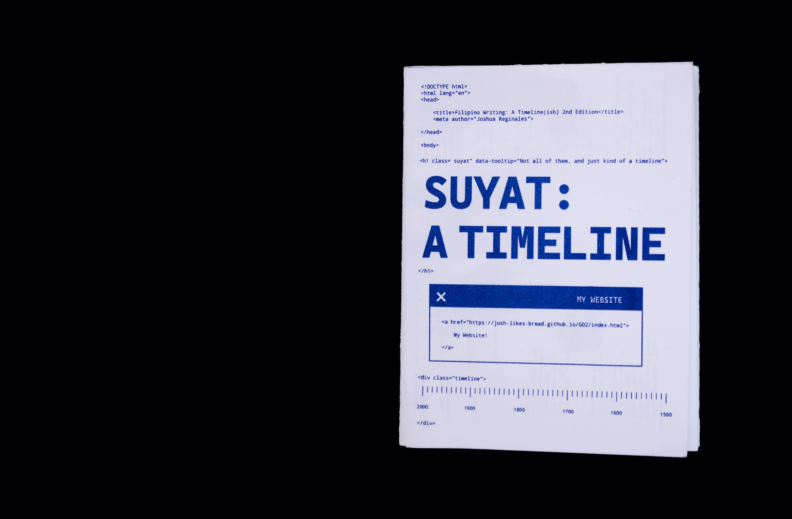
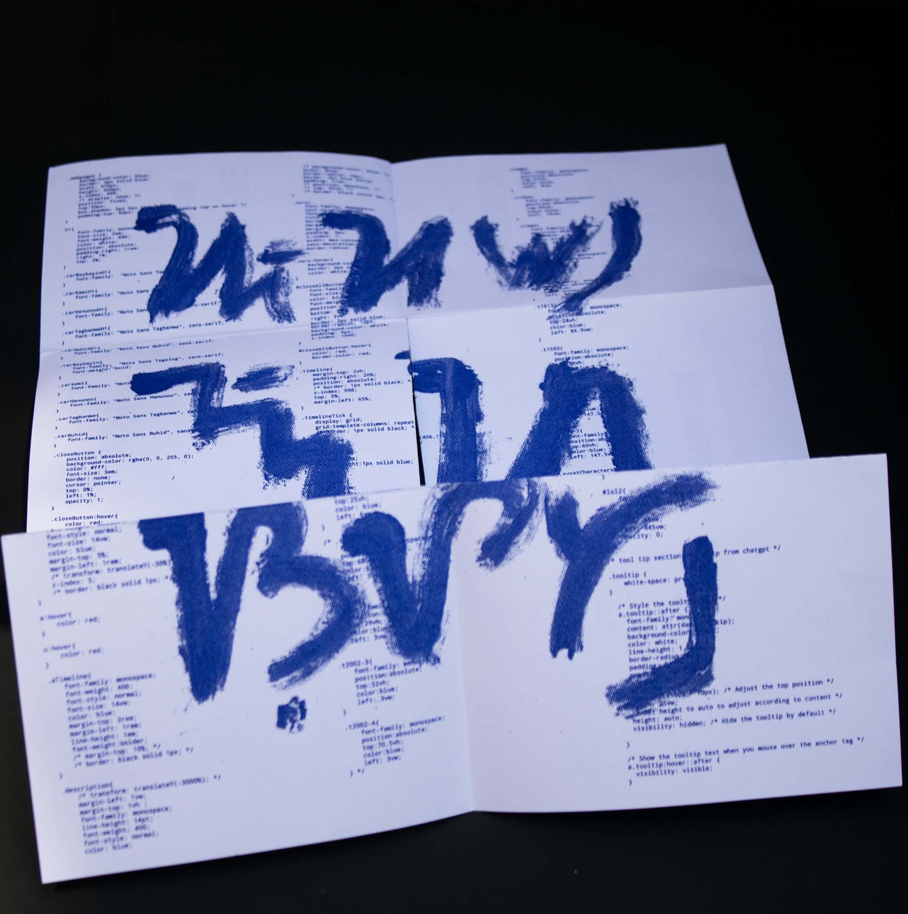
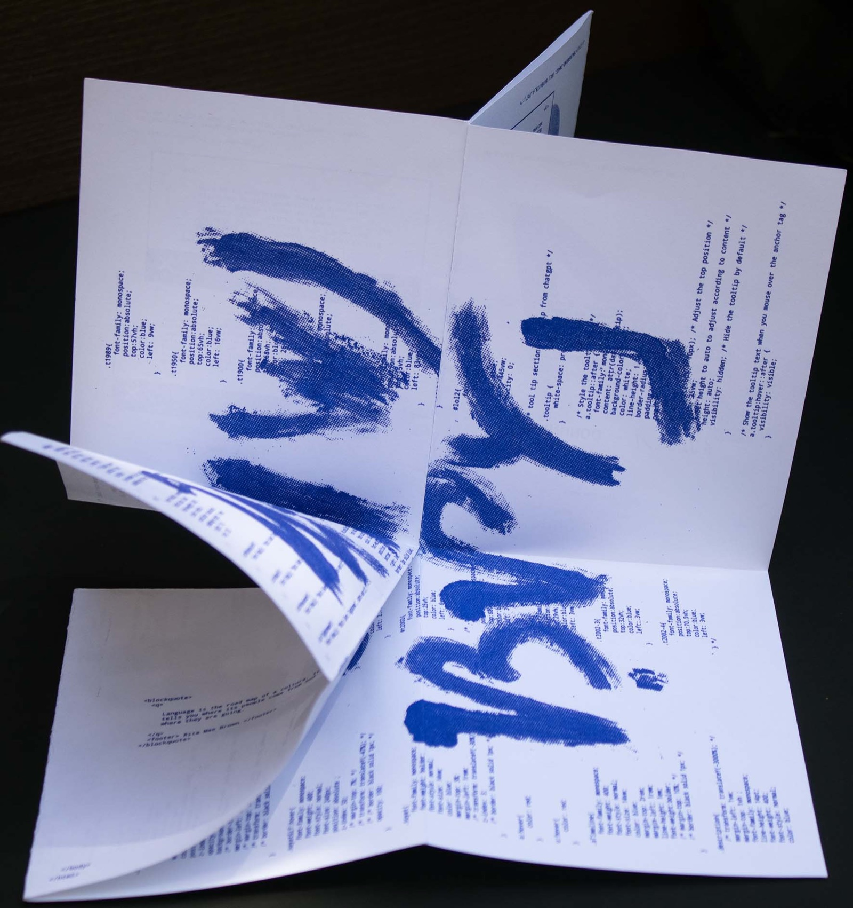
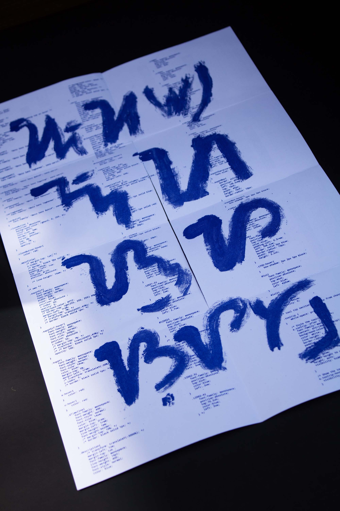

Suyat Booklet
Zine / Editorial
This booklet was an attempt to translate the first website I ever made, an archive/library of Indigenous Filipino writing systems organized along a timeline, into physical form. The project takes the visual language and interactions of a digital medium and reimagines them as something static and tactile.
Each element in the booklet is contained within its corresponding HTML tag, giving the original website’s code a visual representation of the content it creates.



The foldout poster
The zine doubled as a foldout poster in which the word suyat, written in various Filipino scripts, was brushed over the website’s original CSS code. This contrast served as a reflection of the project’s physical-versus-digital theme.
The original Suyat website
In the original website, each entry was placed according to a relevant historical date, and selecting one would open a separate window dedicated to that specific script. This pop-up window, along with the RGB blue, was one of the website’s two main distinguishing visual features, so it was important to translate both into the zine.